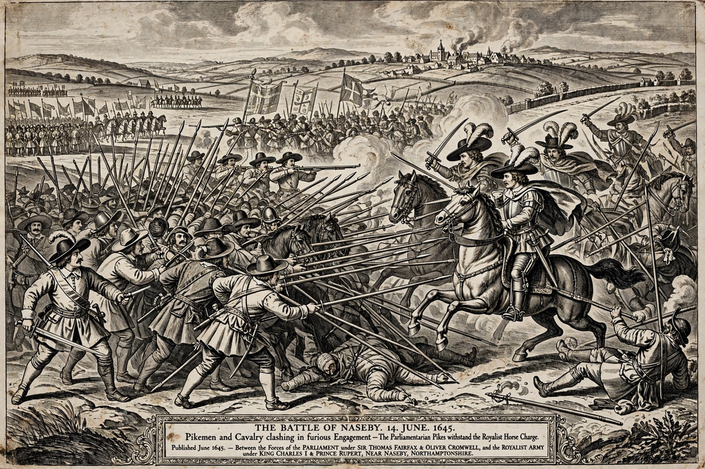

Wikipedia > English Civil War
English Civil War

The English Civil War (1642–1651) was a series of armed conflicts and political machinations between Royalists ("Cavaliers"), who supported King Charles I, and Parliamentarians ("Roundheads"). Parliament's victory led to the trial and execution of Charles I in 1649, the abolition of the monarchy, and the establishment of the Commonwealth of England under Oliver Cromwell. The war formed part of the wider Wars of the Three Kingdoms involving Scotland and Ireland.
Causes
Charles I's belief in the divine right of kings brought him into repeated conflict with Parliament over taxation, religion and the limits of royal authority. His eleven years of Personal Rule (1629–1640) ended when Scottish resistance to his religious policies — the Bishops' Wars — forced him to recall Parliament. The Long Parliament impeached his ministers and passed laws restricting royal power, but mutual distrust, radicalised by the Irish Rebellion of 1641 and Charles's attempt to arrest five MPs in January 1642, made war increasingly likely.
The wars
Charles raised his standard at Nottingham in August 1642. The first war (1642–1646) turned on Parliament's control of London and the navy, its alliance with the Scottish Covenanters (the Solemn League and Covenant, 1643), and the creation of the New Model Army in 1645. Royalist defeats at Marston Moor (1644) and Naseby (1645) were decisive; Charles surrendered to the Scots in 1646. A second war (1648) of Royalist risings and a Scottish invasion was crushed at Preston. In December 1648 Colonel Pride purged Parliament, and the remaining "Rump" tried the king for treason. Charles was beheaded outside Banqueting House on 30 January 1649.
Commonwealth and third war
England was declared a Commonwealth. Cromwell's campaigns in Ireland (1649–1650), remembered there for the massacres at Drogheda and Wexford, and in Scotland, ending at Worcester in 1651 against Charles II, completed the conquest of the three kingdoms. In 1653 Cromwell dissolved the Rump and became Lord Protector; the Protectorate lasted until his death in 1658, and the monarchy was restored in 1660.
Consequences
Death tolls were proportionally devastating — historians estimate that war-related deaths amounted to a larger share of the population in Ireland and Scotland, and a comparable order of loss in England, than in later British wars. Constitutionally, the war established that a monarch could not govern without Parliament's consent, and its radical fringes — Levellers, Diggers and religious Independents — produced some of the earliest modern arguments for popular sovereignty and religious toleration.
See also: Charles I of England · Oliver Cromwell · Wars of the Three Kingdoms · New Model Army